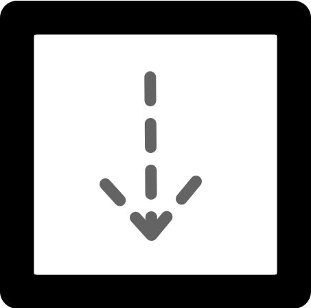
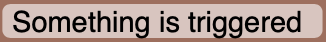
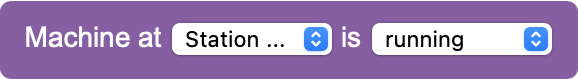
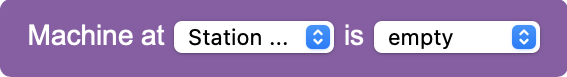
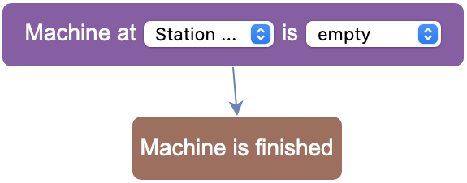

Tutorial 3: Using Triggers and Machines
Task:
- Move the green box
 from Station A to the item processor machine at Station B.
from Station A to the item processor machine at Station B. - Turn on the machine to process the green box into a round shape .
- After processing is complete, move the green box into the chute  at Station C.
This task requires you to use what you have learned before, but it will also introduce some new elements. You can click on each step to get more detailed instructions.
- Move the item to Station B and turn on the machine
- Create a new task to pick up the green box from Station A, following the same steps as in the previous tutorials. Note that this time, the box is in the bottom center of the station.
- Create a second task to place the box into the machine at Station B. Note that the machine limits where you can place the box. It always has to go into the middle center position.
- After placing the box into the machine, you can turn it on by adding a block at the end of the task.
- We recommend that you try out the program up to this point. As you will see, the machine takes some time to process the box. It is only finished once it has returned to its regular colour.
- Create a new task to pick up the green box
- Add a trigger that reacts to when the machine is finished
- Since the machine takes a while to process the box, you cannot simply continue by moving the box to Station C. Instead, you will have to tell the robot when it is ready to continue.
- Open the menu below and drag the block from there onto the canvas. It does not attach to the existing blocks, but can go anywhere.
- Click on  and change the trigger's name so that it describes what you want the robot to react to. For this trigger, you can for example pick the name "Machine is finished".
- Program the trigger
- The trigger has to be programmed to work as intended, similar to the robot itself. Click on the trigger you just placed to open the trigger editor on the right.
- Triggers are not programmed in the same way as tasks. Instead of attaching blocks to each other directly, you place them on the canvas and draw arrows to connect them.
- You can find signals to react to in the menu and blocks to connect them in the
 menu.
menu. - For the trigger to react to the machine being finished, you have to use a  block and a  block.
- After dragging the blocks onto the canvas, you can hover over them and drag an arrow from their connector to the top of the trigger block, similar to this example:
 - Make sure that both blocks have arrows pointing to the trigger. Then select for both blocks and and .
- Finish and test the program
- Now that you have programmed the trigger, you can go back to finishing the program for the robot. Add a task for picking up the processed box from Station B. This block needs to be attached to the block instead of the other task blocks.
- Finally, you need one more task that places the processed block at Station C. This task block attaches to the block you just created. You can always place an item in the bottom center position of the chute.
- You have successfully programmed the entire task. Test your solution by clicking the button below. Watch how the robot executes each step of the program.
Click here to continue with the first task.